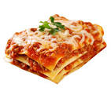

Lasagna Recipe

Recipe Details
- Cook: 30 mins
- Total: 1 hr
- Prep: 30 mins
- Servings: 8
- Yield 1 9x13 inch pan
Ingredients
- 1 (16 ounce) package lasagna noodles
- 1 pound lean ground beef
- salt and pepper to taste
- 1 (16 ounce) jar spaghetti sauce
- 1 clove garlic, minced
- ½ pound shredded mozzarella cheese
- ½ pound shredded Cheddar cheese
- 1 pint ricotta cheese